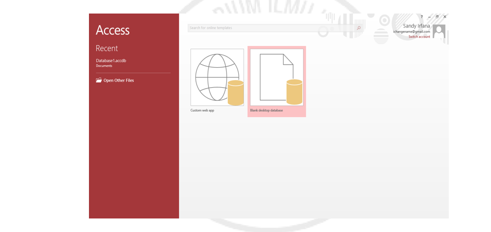

Database
ditulis oleh salsa-ade-nayla. pada 06 Desember 2023
Copyright 2023. salsa-ade-nayla.
Pengertian database yang paling sederhana adalah kumpulan dari tabel. Satu tabel merepresentasikan suatu entitas tertentu. Suatu entitas terdiri atas beberapa atribut.
Microsoft Access
Microsoft Access adalah sebuah program aplikasi basis data computer rasional. Yang ditujukan untuk kalangan rumahan dan Perusahaan kecil hingga menengah.
Membuat Tabel Pada Microsoft Access
- Buka Ms. Access 
- Save dahulu pekerjaan anda
- Pilih create, group tables lalu klik table design. Isi field untuk tabel mahasiswa
- Klik Data_Mahasiswa pada All Access Objects
- Pilih tab Field, lalu klik View dan pilih "Datasheet View" agar dapat mengisi record pada field
- Isikan record pada fieldyang tersedia
XAMPP CMD
- Buka Aplikasi XAMPP
- .Aktifkan MySQL dan Apache dengan cara klik tombol "Start"
- Masuk ke command prompt dengan caraklik tombol Windows +R kemudian ketikkan cmd lalu enter
- Masuk ke dalam sistem MySQL dengan mengetikkan kode berikut :
- Jika berhasil, maka akan ada tulisan Welcome to the MySQL Monitor.

Menampilkan Waktu dan Tanggal
Membuat Database Melalui XAMPP CMD